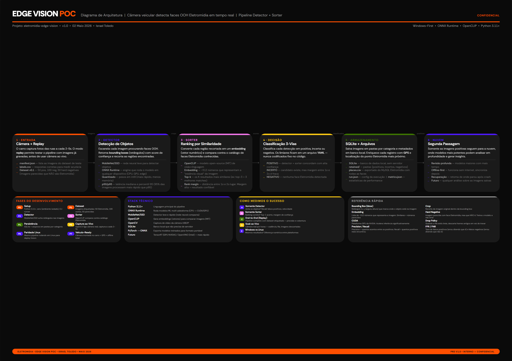

Auditoria manual de face OOH
Hoje, identificar quais faces Eletromidia estão visíveis nas rotas depende de captura manual ou processos não estruturados.
Um sistema de visão computacional embarcado que captura rotas urbanas a cada 2–5 segundos, detecta faces Eletromidia localmente com um pipeline detector+sorter e envia só o que interessa para a nuvem.
Separamos a captura de campo do saIA para manter cada sistema com responsabilidade clara e latência previsível. Pipeline em Python, detector Apache 2.0, dados locais. Em junho, o stack ganhou duas decisões concretas.
Hoje, identificar quais faces Eletromidia estão visíveis nas rotas depende de captura manual ou processos não estruturados.
Sem um pipeline automatizado, não há benchmark de precisão, recall ou falsos positivos. Toda análise é ad-hoc.
Câmera no carro captura a cada 2–5s, detector local filtra candidatos, sorter ranqueia contra catálogo conhecido. Só positivos sobem para nuvem.
O saIA faz auditoria visual estruturada e raciocínio multimodal. O Edge Vision faz captura, filtragem e ranqueamento de baixa latência na ponta. Os projetos podem compartilhar contratos e padrões de cloud review, mas têm donos diferentes.
Arquitetura, PRD, protocolo de benchmark, dataset inicial, diagrama UML e decisões de stack estão todos documentados no Obsidian. O próximo passo e criar o repositório Python e implementar a Fase 0 (esqueleto do pipeline de replay).
Roboflow Supervision (MIT, 42k estrelas) entra no stack para três módulos: sv.Detections como container canônico entre estágios do pipeline, sv.DetectionDataset para carga e conversao de datasets COCO/YOLO/VOC, e métricas (mAP, precision, recall, F1) direto da caixa. Economiza 200-400 linhas de boilerplate.
O baseline MobileNet/SSD foi substituído. O detector recomendado é RF-DETR Small — backbone DINOv2 ViT, 53% COCO AP, 3.5ms de latência em T4, fine-tunável em dados Eletromidia, exporta ONNX e retorna sv.Detections nativamente. Fallback: RT-DETRv4-S para cenas complexas com oclusões e motion blur. Ambos Apache 2.0 — stack 100% permissiva.
Seis estágios independentes que rodam localmente no dispositivo de captura. A nuvem só recebe positivos.
Câmera veicular ou replay de dataset. Captura a cada 2–5 segundos. Modo replay usa imagens pre-gravadas para benchmark reprodutível.
Dataset inicial: 50 positivas, 100 negativas, 50 hard negatives. (12 imagens coletadas ate agora.)
RF-DETR Small (Apache 2.0, backbone DINOv2) via ONNX Runtime. Escaneia cada frame procurando faces OOH. Retorna bounding boxes com score de confiança no formato sv.Detections e recorta as regiões encontradas.
Objetivo: detector permissivo fine-tunado em dados Eletromidia. Falsos positivos serao filtrados pelo sorter. Fallback: RT-DETRv4-S para cenas com oclusão ou motion blur.
OpenCLIP (licença MIT) converte cada crop em embedding (~512 dimensões) e compara contra catálogo de faces Eletromidia conhecidas. Retorna top-k matches com rank margin.
Rank margin: distância entre 1º e 2º match. Margem alta = resultado confiável.
Classifica cada detecção em positiva, incerta ou negativa. Thresholds em YAML, nunca hardcoded. A categoria incerta cria dados de treino e evita esconder falhas de borda.
SQLite para metadados por frame/crop. Arquivos retidos em pastas por categoria. Enriquecimento com GPS + nearest-place via places.csv exportado do MySQL Eletromidia.
Segunda passagem apenas para positivos. Modelos mais potentes analisam em profundidade. Offline-first com sync posterior. Crash recovery integrado.
Python no Windows para dev, ONNX Runtime como camada de portabilidade, Linux PC como primeiro alvo de produção.
sv.Detections nativamente — zero glue code com Supervisionsv.Detections como container canônico, sv.DetectionDataset para datasets, métricas (mAP/precision/recall/F1) out of the box.sv.Detections, 53% COCO AP, fine-tunavel. Substitui o baseline MobileNet/SSD generico.Auto-documentado em pt-BR, pronto para apresentacao a stakeholders. Cada etapa explica o que faz com definicoes tecnicas inline.

Oito fases sequenciais do POC a veículo pronto. Começamos com replay benchmark antes de qualquer dependência de camera ao vivo.
Criar repo Python com venv, OpenCV, ONNX Runtime, SQLite e CLI runner básico. Esqueleto de pastas: src/capture/, src/models/, src/pipeline/, src/storage/, src/geo/, src/benchmarks/.
Criar dataset fixo com 50 positivas, 100 negativas, 50 hard negatives + labels.csv, places.csv e manifest.json. 12 imagens coletadas. Essencial para benchmark reprodutível.
Carregar detector ONNX, rodar sobre dataset de replay, salvar bounding boxes, scores e latência p50/p95. Usar para gerar crops para o sorter.
nao iniciadoGerar embeddings de referencia, embeddar crops, retornar top-k matches com rank margin. Expor scores brutos, nao binarizar cedo demais.
nao iniciadoSQLite com uma row por frame/crop. Reter positivas, incertas e negativas amostradas. Todo modelo e versao de preprocessing registrados.
nao iniciadoOpenCV VideoCapture com intervalo de 2–5s. Fila separada para inferência com drop policy. Soak test de 30–60 min.
nao iniciadoRodar mesmo dataset e mesmos artefatos ONNX no Linux. Comparar outputs e latência. CPU-first; OpenVINO/CUDA como opcionais.
nao iniciadoPlano de montagem, alimentação estável, GPS, política de armazenamento local, offline-first, rotação de logs, crash recovery, export de positivos.
nao iniciadoCinco rodadas de benchmark independentes. Cada uma responde perguntas específicas sobre o pipeline.
| Benchmark | O que mede | Passa se |
|---|---|---|
| Run A: Detector | Recall de detecção, falsos candidatos por imagem, latência p50/p95 | p95 abaixo do intervalo de captura; hard negatives inspecionáveis |
| Run B: Sorter | Top-1/3 accuracy, rank margin, falsos matches em hard negatives | Ranking visivelmenteútilpara positivas fáceis; incertezas identificáveis |
| Run C: End-to-End | Precision, recall, FPR, FNR, latência total, disco, falhas | Output reprodutível; separa positivo/incerto/negativo; metadados para debug |
| Run D: Live Soak | Frames capturados, frames dropados, queue lag, crashes | 30 min sem crash; captura não bloqueia permanentemente |
| Run E: Win vs Linux | Diferencas de output, drift numérico, delta de latência | Decisoes equivalentes na maioria das imagens; drift documentado |
Acoes concretas e perguntas abertas que precisam de resposta para o projeto sair do papel.
Face OOH inteira? Tela? Estrutura do painel? Asset? Regiao mais ampla de signage? A resposta define o escopo de anotação do dataset.
places estao disponiveis para export?Precisamos confirmar com o time de banco quais colunas existem alem de id, name, lat, lng, active.
Imagens com GPS embutido aceleram o enriquecimento e eliminam a necessidade de uma fonte externa de localização no POC inicial.
50 positivas e 50 hard negatives precisam de pelo menos rotulo binario. Idealmente bounding boxes para avaliar o detector corretamente.
Stack 100% permissiva confirmada. RF-DETR Small (Apache 2.0) recomendado como detector principal. RT-DETRv4-S (Apache 2.0) como fallback. Ambos exportam ONNX. Nao dependemos de YOLO/Ultralytics.
pip install supervision rfdetr na Fase 0 (project setup). Supervision fornece o sv.Detections container e métricas desde o primeiro benchmark. RF-DETR pode ser usado como placeholder ou diretamente como detector com pesos pre-treinados COCO para validacao de plumbing.
Planejamento sólido, arquitetura validada, métricas definidas. O que falta é a primeira linha de código e o dataset mínimo. O investimento inicial é baixo: um repo Python, 200 imagens rotuladas e um CLI runner. O resto e iteração.